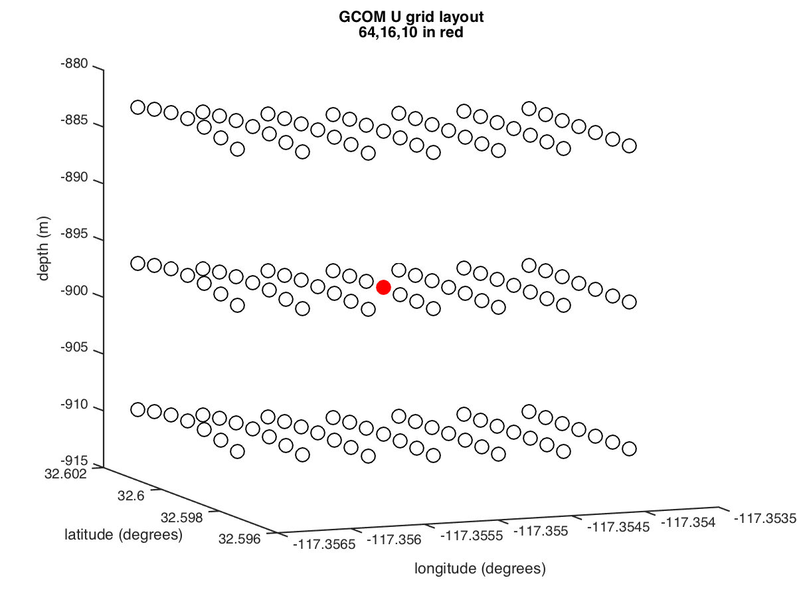

Jump to DART Documentation Main Index
version information for this file:
$Id$
|
|
Jump to DART Documentation Main Index |
This is the DART interface to the
General Curvilinear Ocean Model (GCOM).
The interface was developed in early 2015 through a collaboration between
San Diego State University and NCAR. The GCOM code is under active development
and several modifications were made to the code to support netCDF I/O, a
more robust time management system, and translations from the conceptual
grid to a physical lat/lon/depth space required to locate real observations.
The GCOM source code is not distributed with DART and
must be obtained from SDSU.
It is strongly recommended that you read and work through the
DART tutorial
long before you start working with GCOM/DART or any other model!
There are many routines in the DART interface that are under development and
are expected to change as GCOM evolves. Since this is an experimental
configuration, it is strongly suggested that you become familiar with
all the public interface routines in model_mod.f90.
There are at least two areas that need to be improved
before meaningful results can be achieved.
The GCOM model_mod is an experimental interface under active development. There are many routines that issue warnings begging the user to confirm the result. Once these have been confirmed, please send word back to me (Tim c/o dart@ucar.edu) and I will happily incorporate your comments and suggestions after our group performs our due dilligence and has a 'code review'. The GCOM code has not undergone our group code review. It will surely be improved when it does. Until then, I have tried to identify and call attention to parts of the code that could use oversight.
The scripts are heavily internally documented and are absolutely not "black-box" solutions. They will need to be modified and customized for your machine, filesystem, etc. Please browse them to understand the big picture and then go back and re-read them to fully grasp what is going on.
| Script | Description |
|---|---|
| run_perfect_model_obs.csh | runs a single instance of GCOM to harvest synthetic observations for an OSSE or
"perfect model" experiment. It requires a single GCOM state as input
and an obs_seq.in that contains the
locations and type of the observations desired. See the section on
Creating a synthetic observation sequence.
That example uses the lorenz_63 model as the example, but the steps are
identical for any model. run_perfect_model_obs.csh
is written to be very similar to the script used for an assimilation
experiment (run_filter.csh) because many of the
same steps are required.
|
| run_filter.csh | runs an ensemble of GCOM states for an assimilation, i.e.
"filtering" experiment. It requires an ensemble of GCOM states as input
and an obs_seq.out that contains the
observations to be used in the assimilation. As always, the observation
sequence file generally determines the length of the experiment. These
should be configured to run in the time allowed in whatever cluster you
are running on.
|
| advance_model.csh | is responsible for advancing the GCOM state from the current time to
some arbitrary time in the future. The future time is determined by
the specification of the assimilation 'time step' and the time of the
next observation (or set of observations) to be assimilated.
|
| Split_netCDF_by_time.csh | is a utility to create many gcom_restart_????.nc
files from a single gcom_restart.nc file that has
multiple time steps. Each time step is extracted and is used to create
a single file. The time variable in ALL of the files
is then overwritten with a single time that is specified in the script.
This time must match the starting time in the GCOM
param.datStart_Time specification.
This is intended to be an example of how to create a 'climatological'
ensemble. To be useful, the time steps in the source
gcom_restart.nc file should be 'widely separated'.
|
talk about the relationship between param.dat, the time in the gcom_restart.nc file, the time in the dart_ics file and observations.
The relationship between
input.nml&location_nm:vert_normalization_height,
&assim_tools_nml:cutoff, and the grid spacing is complicated.
The vert_normalization_height is crucial with respect to the
definition of what is within the localization radius or not. It also has an
impact on what gridcells contribute to the application of the
forward observation operator.
The bottom line is that the default
vert_normalization_height
should never be taken for granted.
Test it and see if you like what gridcells are being used for the interpolation.
Test it and see if you like what is happening to the innovations.
The model_interpolate() code simply looks for the
N nearest neighbors. When the horizontal grid SPACING is
several kilometers and the vertical layers are on the order of tens of meters,
and the vertical scale is not exaggerated (1 km in the horizontal =~ 1 km
in the vertical) then ALL the nearest neighbors come from the same horizontal
location and the N closest vertical layers are used. This felt really wrong to me,
so I stretched the vertical exaggeration by choosing a
vert_normalization_height so that I got the N nearest
neighbors from the 'same' vertical level.
In a high-res seamount case, for example, the horizontal spacing is closer to 50m,
and the vertical layers are tens of meters apart. In this case, if there is
NO vertical exaggeration, the N nearest neighbors can come from locations
horizontally nearby as well as vertically - a much more natural representation.
However, that same vertical exaggeration is used in the distance calculation
to determine what is in the localization radius. Consequently, anyplace the
grid is 'warped' in lat/lon space (i.e. the physical space), what is 'close'
strongly depends on the vertical exaggeration as well as the degree of warping.
So - it is quite possible - and quite accurate - to have gridcells that are not
consecutively indexed to have distances that are not consecutive (hard to phrase, actually).
|  | What I mean is that if I put an observation EXACTLY at lonindex = 64, latindex = 16, levelindex = 10 (which is a bit on the side of the seamount case) and have a large vertical exaggeration (vert_normalization_height = 500) ... it is entirely possible that 63,13,10 is closer than 64,15,10. This also causes the increments (the innovations) to appear to be 'noncontiguous', resulting in a peculiarly spotted field of innovations. The image to the left is an example of the few gridcells in a region that is minimally warped. |
The following are diagnostics from a seamount case that had horizontal grid spacing about 50m and vertical spacing in the 10's of meters range. I assimilated a single U_CURRENT_COMPONENT observation exactly on gridcell (64,16,10). With a vert_normalization_height = 500 (a lot of vertical exaggeration), the 12 nearest neighbors all came from the same 'level'. BUT I had to go to a cutoff = 0.000160 (a half-width of more than a kilometer!) to get any other gridcell to be within the cutoff radius - take a look at the following table of the 12 closest gridcells and the image to the lower left.
want interpolation of DART KIND 51 at 242.644923789000 32.5995745035500 -897.902750000000 rank dartindex distance state_value i j k longitude (deg) latitude (deg) depth (meters) 1 29455 2.120369787642344E-009 -5.352092637616289E-004 64 16 10 242.644923789000 32.5995745035500 -897.902750000000 2 29552 62.6446256260277 -5.357401041928145E-004 64 17 10 242.644921565000 32.6001383024000 -897.902750000000 3 29163 427.726339190069 0.436345399286287 63 13 10 242.644486434000 32.5978818510000 -897.872750000000 4 29358 646.030429510927 9.731683813766100E-002 64 15 10 242.644926013000 32.5990107046500 -897.953250000000 5 29649 655.078905333592 9.731683491462780E-002 64 18 10 242.644919341000 32.6007021012000 -897.953250000000 6 29261 1809.16058305424 0.235254445079926 64 14 10 242.644928236500 32.5984469057000 -898.044500000000 7 29746 1814.57536902641 0.235254439486291 64 19 10 242.644917117000 32.6012659000000 -898.044500000000 8 29260 2708.85231830169 0.230943788947948 63 14 10 242.644484207500 32.5984456500000 -897.690250000000 9 29745 2712.47153313136 0.230943783326527 63 19 10 242.644473074500 32.6012646441500 -897.690250000000 10 29164 3277.61800100468 0.434373030719604 64 13 10 242.644930460000 32.5978831067000 -898.159750000000 11 29456 3698.99441002118 1.246747080155530E-002 65 16 10 242.645367823500 32.5995757577500 -898.193250000000 12 29553 3699.52485671758 1.246747443816500E-002 65 17 10 242.645365602500 32.6001395566500 -898.193250000000
When I use vert_normalization_height = 6370000.0 (no exaggeration) the following are the N nearest neighbors and a cutoff = 0.000010 (a half-width of about 64 meters), results in the localization impacting a few neighboring gridcells - see the image on the lower right.
want interpolation of DART KIND 51 at 242.644923789000 32.5995745035500 -897.902750000000 rank dartindex distance state_value i j k longitude (deg) latitude (deg) depth (meters) 1 29455 2.120369787642344E-009 -5.352092637616289E-004 64 16 10 242.644923789000 32.5995745035500 -897.902750000000 2 26351 12.8905509873473 3.258895970186345E-003 64 16 9 242.644923789000 32.5995745035500 -910.801000000000 3 32559 13.7795200415402 -7.998252407111866E-003 64 16 11 242.644923789000 32.5995745035500 -884.115000000000 4 23247 25.0055651719358 1.724938025585966E-003 64 16 8 242.644923789000 32.5995745035500 -922.923250000000 5 35663 28.5696864642526 -1.753079675342877E-002 64 16 12 242.644923789000 32.5995745035500 -869.316000000000 6 20143 36.4514789835257 -6.322428483856149E-003 64 16 7 242.644923789000 32.5995745035500 -934.376000000000 7 29456 41.5656234744980 1.247075979010545E-002 65 16 10 242.645367823500 32.5995757577500 -898.193250000000 8 29454 41.5669355887254 -1.132022111991248E-002 63 16 10 242.644479754500 32.5995732478000 -897.462750000000 9 26350 43.3876021687945 -7.750119021557372E-003 63 16 9 242.644479754500 32.5995732478000 -910.354750000000 10 26352 43.6058582826109 1.610037073839844E-002 65 16 9 242.645367823500 32.5995757577500 -911.096000000000 11 32560 43.7001510110454 5.433125010459082E-003 65 16 11 242.645367823500 32.5995757577500 -884.400750000000 12 32558 43.9274327567607 -1.881031848668287E-002 63 16 11 242.644479754500 32.5995732478000 -883.681500000000
| Innovations from a single observation. | |
|---|---|
| vert_normalization_height = 500.0 cutoff = 0.000160 |
vert_normalization_height = 6370000.0 cutoff = 0.000010 |

| 
|
This namelist is read from the file input.nml. Namelists start with an ampersand '&' and terminate with a slash '/'. Character strings that contain a '/' must be enclosed in quotes to prevent them from prematurely terminating the namelist. The values shown here are the default values.
&model_nml
gcom_restart_file = 'gcom_restart.nc'
gcom_geometry_file = 'gcom_geometry.nc'
output_state_vector = .false.
assimilation_period_days = 1
assimilation_period_seconds = 0
model_perturbation_amplitude = 0.2
debug = 0
gcom_variables = 'u', 'KIND_U_CURRENT_COMPONENT', 'NA', 'NA', 'UPDATE',
'v', 'KIND_V_CURRENT_COMPONENT', 'NA', 'NA', 'UPDATE',
'w', 'KIND_W_CURRENT_COMPONENT', 'NA', 'NA', 'UPDATE',
'p', 'KIND_PRESSURE', '0.0', 'NA', 'UPDATE'
/
| Item | Type | Description |
|---|---|---|
| gcom_restart_file | character(len=256) | this is the filename of the GCOM restart file. The DART scripts resolve linking the specific GCOM restart files to this generic name. This file provides the elements used to make up the DART state vector. |
| gcom_geometry_file | character(len=256) | this is the filename of the GCOM geometry file. The GCOM developers have not decided on having the geometry in a file separate from the restart file. As implemented, this is simply a link to the gcom_restart.nc file. |
| output_state_vector | logical | If .true., write the state vector as a 1D array to the DART diagnostic output files. If .false., break up state vector into variables before writing to the output files. |
| assimilation_period_days, assimilation_period_seconds |
integer | Combined, these specify the width of the assimilation window. The current model time is used as the center time of the assimilation window. All observations in the assimilation window are assimilated. BEWARE: if you put observations that occur before the beginning of the assimilation_period, DART will error out because it cannot move the model 'back in time' to process these observations. DART can only advance the model in whole multiples of the assimilation window. The assimilation window must be compatible with how GCOM is configured by the Stop_Time_sec and Writeout_freq in param.dat. |
| model_perturbation_amplitude | real(r8) | This specifies the variance of the zero-mean gaussian noise used by the pert_model_state() routine when creating an ensemble by perturbing a single model state. |
| debug | integer | Set to 0 (zero) for minimal output. Successively higher values generate successively more output. 9 is the last useful value. After I test a block, I will frequently leave the test in and set the debug level to 99. Those blocks are well tested but might be needed again under new model configurations. They generally produce too much output to be used in a production setting. |
common/types_mod time_manager/time_manager_mod location/threed_sphere/location_mod utilities/utilities_mod obs_kind/obs_kind_mod [null,]mpi_utilities/mpi_utilities_mod random_seq/random_seq_mod sort/sort_mod typesizes (from the netCDF installation) netcdf (from the netCDF installation)
A note about documentation style. Optional arguments are enclosed in brackets [like this].
integer :: get_model_size
Returns the length of the model state vector.
| model_size | The length of the model state vector. |
real(r8), dimension(:), intent(inout) :: x type(time_type), intent(in) :: time
Since GCOM is not advanced as a subroutine, this is simply a stub. Should DART attempt to advance GCOM (async = 0). adv_1step() will cause a fatal error with a very clear message that DART cannot advance GCOM as a subroutine. adv_1step() is only called if the namelist parameter async = 0 in perfect_model_obs or filter or if the program integrate_model is to be used to advance the model state as a separate executable.
| x | State vector of length model_size. |
| time | Specifies time of the initial model state. |
integer, intent(in) :: index_in type(location_type), intent(out) :: location integer, optional, intent(out) :: var_type
Given an integer index into the state vector structure, returns the associated location. A second intent(out) optional argument returns the generic kind of this item, e.g. KIND_U_CURRENT_COMPONENT, KIND_DENSITY, KIND_SALINITY ...
| index_in | Index of state vector element about which information is requested. |
| location | The location of state variable element. |
| var_type | The generic DART kind of the state variable element. |
real(r8), dimension(:), intent(in) :: x type(location_type), intent(in) :: location integer, intent(in) :: itype real(r8), intent(out) :: obs_val integer, intent(out) :: istatus
Given a state vector, a location, and a DART KIND interpolates the model state variable field to that location for the DART KIND in question and returns the value in obs_val. This is the basis of all the forward observation operator code. As of 30 April 2015 (r7876) the following is still true:
The model_interpolate() desperately needs work. The nearest-neighbor algorithm currently in place is woefully inadequate because it allows for extrapolation, and may (correctly) identify all the nearest neighbors as being in the same 'column'. The more correct procedure would be to interpolate for the horizontal location at the layer below, again for the horizontal location at the layer above, and then vertically interpolate to the layer of interest. When someone codes that up, PLEASE send me the code! Seriously! -- Tim -- P.S. It has to work for the fully curvilinear grid - and I don't mean just the easy case when its not actually curvilinear!
| x | A model state vector. |
| location | Location to which to interpolate. |
| itype | Kind of state field to be interpolated. |
| obs_val | The interpolated value from the model. |
| istatus | Integer value returning 0 for success. Other values can be defined for various failures. Negative values are reserved for DART. |
type(time_type) :: get_model_time_step
Returns the minimum amount of time that the model should be advanced. This is not the dynamical timestep of the model, but rather some multiple of the file output frequency. DART stops GCOM to get the new prior for an assimilation cycle - get_model_time_step() is used to determine the forecast length. The value returned by get_model_time_step() is set by input.nml&model_nml variables assimilation_period_days and assimilation_period_seconds.
| var | Smallest forecast length possible with GCOM. |
Called to do one-time initialization of the model. static_init_model() reads the DART input.nml to determine what variables will be used to create the DART state, what GCOM files to use to read the GCOM grid and state, etc.
Deallocates the geometry variables from the model intialization.
type(time_type), intent(out) :: time
DART/GCOM is not configured to start up from arbitrary initial conditions so init_time() is not supported. Should init_time() be called, it will error out. Companion interface to init_conditions().
| time | Initial model time. |
real(r8), dimension(:), intent(out) :: x
DART/GCOM is not configured to start up from arbitrary initial conditions so init_conditions() is not supported. init_conditions() is only called if the namelist parameter start_from_restart = .false.. Should init_conditions() be called, it will error out.
| x | Initial conditions for state vector. |
integer :: nc_write_model_atts integer, intent(in) :: ncFileID
This routine is used to create the DART diagnostic files. It writes the model-specific attributes and metadata to a netCDF file, but NOT the model state vector. Basically, all the static data is written to the netCDF file in nc_write_model_atts() and all the dynamic data is written (as it is created) in nc_write_model_vars().
| ncFileID | Integer file descriptor to previously-opened netCDF file. |
| ierr | Returns a 0 for successful completion. |
integer :: nc_write_model_vars integer, intent(in) :: ncFileID real(r8), dimension(:), intent(in) :: statevec integer, intent(in) :: copyindex integer, intent(in) :: timeindex
nc_write_model_vars(). writes the model-specific state vector (data) to a netCDF file. As the state vector evolves with every assimilation, the new state is appended to the netCDF file contents.
| ncFileID | file descriptor to previously-opened netCDF file. |
| statevec | A model state vector. |
| copyindex | Integer index of copy to be written. Each ensemble member has a unique index, as does the ensemble mean, spread, inflation ... |
| timeindex | The timestep counter for the given state. |
| ierr | Returns 0 for normal completion. |
real(r8), dimension(:), intent(in) :: state real(r8), dimension(:), intent(out) :: pert_state logical, intent(out) :: interf_provided
pert_model_state() perturbs a single model state to
create a new state. This is used to generate initial conditions for spinning
up ensembles. This routine needs work. It currently simply adds zero
mean gaussian noise to the input state without respect to the dynamic range
of the variable in question or whether or not GCOM can tolerate the
resulting state. The variance is set by
input.nml&model_nml:model_perturbation_amplitude.
pert_model_state() is called when input.nml&filter_nml
start_from_restart = .false. .
In this case, a single restart file must exist and is specified in
input.nml&filter_nml
restart_in_file_name .
| state | State vector to be perturbed. |
| pert_state | Perturbed state vector. |
| interf_provided | Since pert_model_state() actually creates a new perturbed state, interf_provided = .true.. A value of .false. would indicate that the default DART method should be used. |
type(get_close_type), intent(inout) :: gc real(r8), intent(in) :: maxdist
In distance computations any two locations closer than the given maxdist will be considered close by the get_close_obs() routine. Pass-through to the 3D Sphere locations module. See get_close_maxdist_init() for the documentation of this subroutine.
| gc | The get_close_type which stores precomputed information about the locations to speed up searching. |
| maxdist | Anything closer than maxdist radians will be considered close. |
type(get_close_type), intent(inout) :: gc integer, intent(in) :: num type(location_type), intent(in) :: obs(num)
Precomputes information to accelerate the distance computations done by get_close_obs(). Pass-through to the 3D Sphere locations module. See get_close_obs_init() for the documentation of this subroutine.
| gc | The get_close_type which stores precomputed information about the locations to speed up searching |
| num | The number of items in the third argument |
| obs | A list of locations which will be part of the subsequent distance computations |
type(get_close_type), intent(in) :: gc type(location_type), intent(in) :: base_obs_loc integer, intent(in) :: base_obs_kind type(location_type), intent(in) :: obs(:) integer, intent(in) :: obs_kind(:) integer, intent(out) :: num_close integer, intent(out) :: close_ind(:) real(r8), optional, intent(out) :: dist(:)
Given a location and kind, compute the distances to all other locations
in the obs list. The return values are the number
of items which are within maxdist of the base, the index numbers in the
original obs list, and optionally the distances. The gc
contains precomputed information to speed the computations.
If distances are desired, "Dry" grid cells are modified to be far away
from everything so they are not candidates for calculations. When it is
confirmed that GCOM will never support a grid with dry grid cells,
this may simply be a pass-through to the default
get_close_obs().
| gc | The get_close_type which stores precomputed information about the locations to speed up searching |
| base_obs_loc | Reference location. The distances will be computed between this location and every other location in the obs list |
| base_obs_kind | The kind of base_obs_loc |
| obs | Compute the distance between the base_obs_loc and each of the locations in this list |
| obs_kind | The corresponding kind of each item in the obs list |
| num_close | The number of items from the obs list which are within maxdist of the base location |
| close_ind | The list of index numbers from the obs list which are within maxdist of the base location |
| dist | If present, return the distance between each entry in the close_ind list and the base location. If not present, all items in the obs list which are closer than maxdist will be added to the list but the overhead of computing the exact distances will be skipped. |
real(r8), dimension(:), intent(in) :: ens_mean
A model-size vector with the means of the ensembles for each of the state vector items. The ens_mean is updated after each model advance. This is a stub for GCOM.
| ens_mean | State vector containing the ensemble mean. |
| use model_mod, only : | get_gcom_restart_filename |
| gcom_file_to_dart_vector | |
| dart_vector_to_gcom_file | |
| DART_get_var | |
| write_gcom_timeinfo | |
| test_interpolation |
character(len=*), intent(out) :: filename
provides access to the name of the GCOM restart file to routines outside the scope of this module.
| filename | The name of the GCOM restart file. |
character(len=*), intent(out) :: filename real(r8), intent(inout) :: state_vector(:) type(time_type), intent(out) :: state_time
Reads the current time and state variables from a GCOM netCDF
restart/output file and packs them into a DART state vector.
This MUST happen in the same fashion as the metadata arrays are built.
The variables are specified by model_nml:gcom_variables.
If there are multiple times in the file of origin, only the LAST time is used.
| filename | The name of the GCOM restart file. This is usually a static name that comes from the model namelist and the scripting usually successively links the unique filename to the static name. |
| state_vector | The DART state vector. |
| restart_time | The valid time of the GCOM state. |
real(r8), intent(in) :: state_vector(:) character(len=*), intent(in) :: filename type(time_type), intent(in) :: statedate
dart_vector_to_gcom_file() updates the GCOM restart file
with the posterior state from the assimilation. Only those variables with the
UPDATE specification in the
&model_nml:gcom_variables input will be updated in the
GCOM restart file. If there are any physical limits for these variables, they
are applied at this time.
Some GCOM variables may be useful to include in the DART state
for the purpose of the forward observation operator are diagnostic
quantities and are not used for subsequent model advances.
These diagnostic variables do not have to be updated.
| state_vector | The DART state vector containing the state modified by the assimilation. |
| filename | The name of the GCOM restart file. The contents of some of the variables will be overwritten with new values. |
| statedate | The valid time and date of the DART state. This time must match one of the times in the GCOM restart file. Only the variables at the matching time index are updated. |
integer, intent(in) :: ncid character(len=*), intent(in) :: varname real(r8), dimension(:), intent(out) :: datmat -or- real(r8), dimension(:,:), intent(out) :: datmat -or- real(r8), dimension(:,:,:), intent(out) :: datmat
Reads a 1D, 2D, or 3D variable of 'any' type from a netCDF file and processes and applies the offset/scale/FillValue attributes correctly.
| ncid | The netCDF file identifier to an open file. ncid is the output from a nf90_open() call. |
| varname | The name of the netCDF variable of interest. The variables can be integers, floats, or doubles. |
| datmat | The shape of datmat must match the shape of the netCDF variable. Only 1D, 2D, or 3D variables are currently supported. |
type(time_type), intent(in) :: current_time type(time_type), intent(in) :: forecast_stop_time
Writes the time information necessary to correctly start and stop a GCOM
execution to a file (dart_gcom_timeinfo.txt) that can
then be used to update the GCOM param.dat file.
dart_gcom_timeinfo.txt has the same information in
two formats - one if reading by a namelist, one for the historical GCOM
format.
advance_model.csh reads from
dart_gcom_timeinfo.txt and updates
param.dat.
| current_time | the current time of the model state. |
| forecast_stop_time | The time needed for the next assimilation. |
integer, intent(in) :: test_casenum
This is a stub routine that contains commented-out code to assist in developing a better model_interpolate() routine.
| test_casenum | The identifier for which test to run. |
| filename | purpose |
|---|---|
| param.dat | GCOM control file modified to control starting and stopping. |
| input.nml | to read the model_mod namelist |
| gcom_restart.nc | both read and modified by the GCOM model_mod |
| gcom_geometry.nc | read by the GCOM model_mod for metadata purposes. |
| dart_log.out | the run-time diagnostic output |
| dart_log.nml | the record of all the namelists actually USED - contains the default values |
The GCOM model_mod is an experimental interface under active development. There are many routines that issue warnings begging the user to confirm the result. Once these have been confirmed, please send word back to me (Tim c/o dart@ucar.edu) and I will happily incorporate your comments and suggestions after our group performs our due dilligence and has a 'code review'. The GCOM code has not undergone our group code review. It will surely be improved when it does. Until then, I have tried to identify and call attention to parts of the code that could use oversight. As such, I will not attempt to list ALL of the error conditions here - just the ones I believe to be the most likely or perhaps are not perfectly clear from the error message issued at runtime.
| Routine | Message | Comment |
|---|---|---|
| nc_write_model_atts nc_write_model_vars |
Various netCDF-f90 interface error messages | From one of the netCDF calls in the named routine |
| init_conditions | 'WARNING!! GCOM model has no built-in default state'... | GCOM cannot run with 'start_from_restart = .false.' |
| init_time | 'WARNING!! GCOM model has no built-in default time'... | GCOM cannot run with 'start_from_restart = .false.' |
| adv_1step | 'GCOM model cannot be called as a subroutine; async cannot = 0' | GCOM is supported as a standalone executable. |
| parse_variable_table | 'input.nml &model_nml:gcom_variables not fully specified' | GCOM is supported as a standalone executable. |
| fill_progvar | '&model_nml state_variable input error for ...' | The minimum and maximum values for the input variable are inconsistent. |
| gcom_file_to_dart_vector | 'no support for units of ...' | The time coordinate variable in the gcom_restart.nc file uses a syntax that is not supported. |
| gcom_file_to_dart_vector | 'no support for data array of dimension ...' | DART/GCOM supports variables up to 3 dimensions for any single time. It would be easy to support variables of higher dimensions, I do not believe GCOM currently has anything higher than 3 dimensions. |
none at this time
N/A
DART software - Copyright 2004 - 2013 UCAR.
This open source software is provided by UCAR, "as is",
without charge, subject to all terms of use at
http://www.image.ucar.edu/DAReS/DART/DART_download
| Contact: | Tim Hoar |
| Revision: | $Revision$ |
| Source: | $URL$ |
| Change Date: | $Date$ |
| Change history: | try "svn log" or "svn diff" |